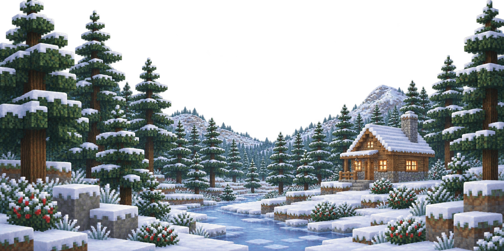
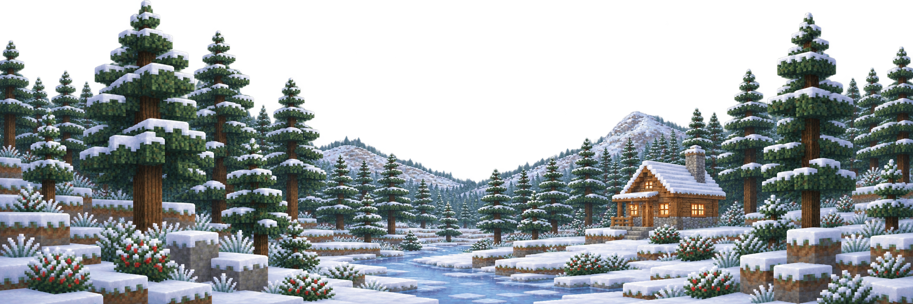

Winter evergreen valley — composition proof
Fresh mobile-first winter artwork · cohesive desktop expansion · transparent seasonal layer · no lighting, weather, or runtime integration
Clean composition comparison

390px mobile master

Desktop expansion of the same world
Mobile header and celestial clearance
SENSEI · transparent header
complete retreat below header zoneThe retreat remains fully visible from roof through foundation; the central sky corridor remains available for a sun or moon behind the scenery.
Desktop framing guides
SENSEI · transparent header
same geography · expanded side woodland